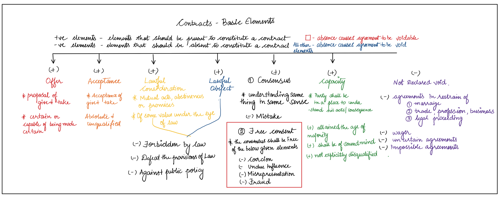

MODULE 3 - VOID AGREEMENTS
This series of articles try to briefly explain the general concepts and principles of contracts for gaining basic comprehension of the working knowledge of contracts. A reading through Bare Act along with and after this article could give the reader better clarity of the concepts explained in here. Additionally, there are exceptions and interpretations to these general principles which are not covered in detail in this article.
Primary Formula
AGREEMENT = OFFER + ACCEPTANCE + CONSIDERATION
Secondary Formula
LEGAL AGREEMENTS/CONTRACTS = AGREEMENT (OFFER + ACCEPTANCE + LAWFUL CONSIDERATION) + CAPACITY + CONSENSUS + FREE CONSENT + LAWFUL OBJECT. (S.10 ICA)
Refer to module 2 for elaboration of the consequences that could occur in absence of free consent.
Reiterating the point made in Module 2, the absence of any element in the formula (except free consent) either at the initiation or during the performance of the agreement will cause the agreement to be void and unenforceable under law in case of breach. We, in this module, shall see in detail the voidability of agreements caused due to the absence of prior mentioned elements.
ABSENCE OR AMBIGUITY OF OFFER, ACCEPTANCE
An agreement to be rendered void, should exist in the 1st place. Offer and acceptance are the basic and initial elements of any transaction. Thus, it could be said that these two elements are a necessary prerequisite to the formation of an agreement. Both Offer and Acceptance of the terms of an agreement ought to be without any ambiguity in its wording. In case of any ambiguity in such wordings, though the court shall look into the intention professed through such terms to decide the reasonable meaning, the benefit of the doubt shall be given to the party in breach to nullify the claim by the other for compensation or specific performance.
Similarly, Acceptance shall be absolute and unqualified. That is, acceptance to an offer shall be only to the same terms and any change in the terms of the offer shall not result in an agreement but only in a counteroffer with different terms.
ABSENCE OF LAWFUL CONSIDERATION AND OBJECT
There are two instances to be noted here -
- Presence of a Consideration (S.25)
- Legality of such Consideration and Object (S.23,24)
- Presence of Consideration
- Gift Agreement / Agreement made out of love and affection – ICA allows for unilateral consideration, exempting itself from the general rule, based on equating love and affection (a non-monetizable/quantifiable entity) to money or money’s worth as the consideration that flows to the other side. But the element to constitute a gift -
- It shall be registered and in writing
- Only between people of near relations (between family of 1st class - siblings, parents, and children)
- Agreement to compensate for an act voluntarily done by one party to another previously – The general rule, as mentioned in the prior modules, is that past consideration can’t be consideration under the eyes of law. But given that a voluntary act is done previously, and at present the party who had received such voluntary act, or its benefits has promised to compensate the other, then this agreement is enforceable inspite of it being unilateral.
- Agreements that promised to pay a time barred debt.
- Legality of such Consideration and Object
- Considerations or objective that are forbidden by law – This part covers considerations and objectives that are explicitly declared illegal by any law at the time in force in India. Here law only means substantive law and not the enforcement or procedural laws. Any consideration that violates a procedural law that entails an agreement will not extend to the level of nullifying the agreement in itself but rather will have a consequent fine or compensation. Eg – murder is declared illegal under IPC, thus an agreement which entails murder as an objective or a promise to murder in exchange of something is not enforceable in case of breach.
- Considerations that could, if enforced, defeat the provisions of law – This part talks about agreements with objectives and considerations that essentially go against an act or a section. These considerations aren’t forbidden explicitly but rather if enforced could render the legislation or the particular section useless. Agreements promising to secure govt jobs in exchange for money if enforced is directly against the respective organization’s legislation and art 15 of our constitution thus unenforcible.
- Against public policy – the part talks about agreements if enforced is bad of public welfare. The definition of this part is subject to the courts’ precedence. They through a lot of previous judgements have included agreements with either the object or consideration involving
- Trades with enemies
- Stifling prosecutions – agreements between parties to drop criminal charges for compoundable offenses in exchange for money or its worth
- Improper interference with justice
- Unconscionable and ill-motivated champerty
- Ones creating interest against duty – public servant given money in exchange of granting license etc
Section S.25 of ICA necessitates the presence of consideration (with exceptions) by declaring agreements in absence of the same to be void. The exceptions to this are -
Once the presence of consideration rule is fulfilled, the next aspect of this paradigm is that such consideration and objective that the transaction entails or tries to achieve shall be lawful.
S.23 draws a set of conditions anything beyond which is declared lawful. They are -
S.24 states, if the unlawful consideration forms only a part of a whole and is divisible from the lawful part then the agreement is enforceable to the lawful extent.
ABSENCE OF CAPACITY TO CONTRACT
S.11 defines the capacity of a person to contract. The elements to be fulfilled for a person to gain the capacity to contract under ICA are -
- Must have attainted the age of majority –
- Where the said minor is a beneficiary of contract.
- In contracts where the minor has already executed his part in accordance with its terms.
- Shall be of sound mind -
- Shall not be explicitly disqualified from contracting by any law -
ICA, with the intention to protect minors from being exploited due to the reasonably assumed ignorance in relation to their age, renders the contract with minors ‘void ab initio’. The contract will not be enforceable, whatever stage the contract might be in when the breach occurs, even if they bound by their own promises. This is because rule of estoppel doesn’t apply to minors. Even in instances where a fraudulent misrepresentation by the minor is clearly proved, only a compensation to the aggrieved person shall be imposed from the minor’s estate (if any) without any personal liability. Contrary to this general rule yet in accordance with the intention, there are a few exceptions where minor contracts are valid and executable
Guardians are allowed to enter into contracts on behalf of minors for fulfilling their necessities (S.68). Here the minors have zero personal liability over such contracts where the guardians are entitled to pay or be compensated only from the minors’ estate (if any). Neither is Ratification of a contract entered into when one of the party was minor is executed as such contracts re void ab initio.
As to understand the act and its consequences in accordance with the person’s interest.
Eg. - cabinet ministers are explicitly disqualified from having an office of profit while they operate in the cabinet thus any commercial contracts entered by them during such office is void due to the lack of capacity under this sub clause.
ABSENCE OF CONSENSUS
Primarily, a consensus between parties (S.13) as to the subject matter of the agreement is necessitated by S.10 of ICA to form a valid contract. Secondarily, S.10 also requires such consent to be free which was dealt with in module 2. The absence of consensus is caused by mistake of fact, in other words a misunderstanding between parties relating to a fact essential to an agreement. It could render the agreement to be or become void. The types of mistakes that could occur between parties are of two types -
- Common mistake shared by all the parties - intended in S.13
- Mutual mistake as to a fact that’s essential to the agreement – defined under S.20
This is where the parties are in consensus but over a mistaken fact that’s essential to the agreement. Eg. could be an agreement for sale of a cow, where the cow being dead unknown to the parties contracting. Here there was a consensus between parties to transact a living cow for money but are under the mistake about the life of the cow.
In mutual mistake, it is rather a misunderstanding between the parties over the terms that are essential to the agreement. Thus, it could be said to be in complete absence of consensus. For Example, where one person orders 100 cotton bales from a jute vendor who also sells cotton but is under the conception to have taken a order for 100 jute bales. Here the subject matter of agreement is at confusion caused by a mutual mistake thus void, if it could be proved that both the parties were inclined to reasonably believe their stance. In case one fails to prove the same, the general rule codified under S.22 that unilateral mistake shall not render the agreement void would be applied and the contract would be enforced in favour of the person under the reasonable belief.
S.21 says, only a mistake of fact could cause nullity and a mistake as to law will not cause the agreement to be void.
PRESENCE OF ELEMENTS THAT HAS BEEN DECLARED VOID
ICA has adopted some restrictive principles from common law and based on that has declared certain types of contracts that are be opposed to public welfare as void. They are -
- Agreements in restraint of
- Marriage (S.26) – all agreements completely or partially restrain a person from having the choice to marry certain individual or a class of person is expressly against public welfare and thus declared void. Exceptions – minor marriage, maintenance/alimony agreements with nullification clause on remarriage are valid inspite of being in restrain of marriage as they are not opposed to the public welfare.
- Trade, profession, or business (S.27) – Agreements in restraint of trade are generally valid but are invalid only if they are prima facie unconscionable. The point to be noted here is that such agreements are void only to the extent of it being unconscionable. For example, most valid employment agreements are implicitly agreements in restraint of profession as it restricts the employee from working in any competing firm (don’t work against the employer working under him). But such agreement becomes void when it crosses from the point of protecting the employer’s interest to the point of unconscionably exploiting the employee’s interest by including a clause that restricts the employee from taking a job in any other competing firm for three months even after being fired from the former.
- Legal proceedings (S.28) - Generally agreement that restricts a party from approaching court is void as it’s against public welfare. This also include agreement which agrees to reduce the period of limitation (period within which the agreement is enforceable in court after the point of breach). Whereas the vice versa, that is agreements to extend the limitation period is valid as its not against public policy but a mere forbearance of right to take defense under limitation laws. Arbitration agreement though might look like agreements that are in restrain of legal proceedings, only go to the extent of limiting themselves to give the first preference to an arbitrator in case of breach. The parties to the arbitration are still free to approach the court if they feel such arbitration was biased or insufficient. Similarly, agreements that limits the jurisdiction to one particular court out of many courts that have jurisdiction is valid as its merely a forbearance of choice and not restrain for legal proceedings in itself. But in case of agreements that ignore the court with jurisdiction and fix a court of choice without actual jurisdiction over the issue are void under this part.
- Uncertain or vague Agreements (S.29) –
- Wager agreements (S.30) –
- One way consideration based on determination of an uncertain event out of the control of the parties involved.
- Equal chances of gain and loss to parties involved based on such uncertain event.
Agreements are expected to be certain or atleast shall be capable of being made certain using tools such as circumstances, intention behind wording etc. This is to reduce misunderstandings and subsequent suits based on that. Thus, uncertain agreements are declared void.
Wager agreements are agreements where parties are required to act in a way based on the determination(happening/non-happening) of a particular uncertain event which on occurrence shall cause a gain to one and loss to another. Primary elements being -
Wager is in other ways called betting. Wagers are similar yet different from contracts of indemnity (insurances). In latter one party promises to save the other from loss caused by the determination of a future uncertain event (eg – fire, accidents etc) in exchange for small amounts of premium paid by the second party to the first on anticipation of happening of such unfortunate event. There is a two-way consideration and the object being to protect a person from loss in case of misfortune. But wagers entail a one-way consideration based on determination of an event and object being a mere thrill of taking risk with an intention to gain, which is dangerous to public welfare. Thus, wager agreements with exceptions (regulated horse race betting) are void.
MIND MAP OF BASIC ELEMENTS
This mind map covers the entire elements that makes a contract valid under the purview of Indian Contract Act. This serves the purpose of revision, to help us aid an understand of the course. Statements that are denoted with the star (*) in front of it are simple one-line definitions whereas statements with plus or minus symbol before it denotes positive and negative sub elements that ought to be present and absent respectively to constitute the primary elements.
